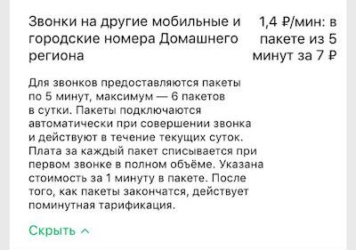

Описание тарифа
2018-04-12

Пакет из 5 минут за 7 рублей. Пакеты по 5 минут, максимум — 6 пакетов в сутки.
Всегда было интересно посмотреть на людей, которые придумывают такое.
Новояз
2018-04-12
Звонит Тимур:
— Папа, а вот я сейчас пойду гулять, можно я круассанчики в подкрепку возьму?
Вот так слово за слово и перестанешь вообще что-либо понимать :)
Пленка
2018-04-08

Снова фотографирую на пленку!
И веду блог!
Вот.
GoGo Penguin Live from Old Grenada Studios
2016-11-29
АлоэВера
2016-10-31
Очень приятная :)
ГШ
2016-10-03
Клевые ребята)
Электронная осень
2016-09-24
Не часто сейчас слушаю электронику, но как-то так получилось, что за последние пару месяцев вышло аж три альбома, которые хочется упомянуть:
- CloZee с их EP'шкой Revolution, узнал про ребят из музыкального обзора Медузы (в котором, к слову, частенько нахожу что-то новое и приятное).
- Новый альбом старых знакомых Pitch Black – Filtered Senses напомнил мне звуком Massive Attack и Leftfield одновременно (переслушал по этому поводу ставший уже классикой Leftism 1995 года).
- И на сладкое очень драйвовый диск от Birdy Nam Nam – Dance or Die, огонь!
Первый класс
2016-09-01

Парень так вырос, что пошел сегодня в первый класс)